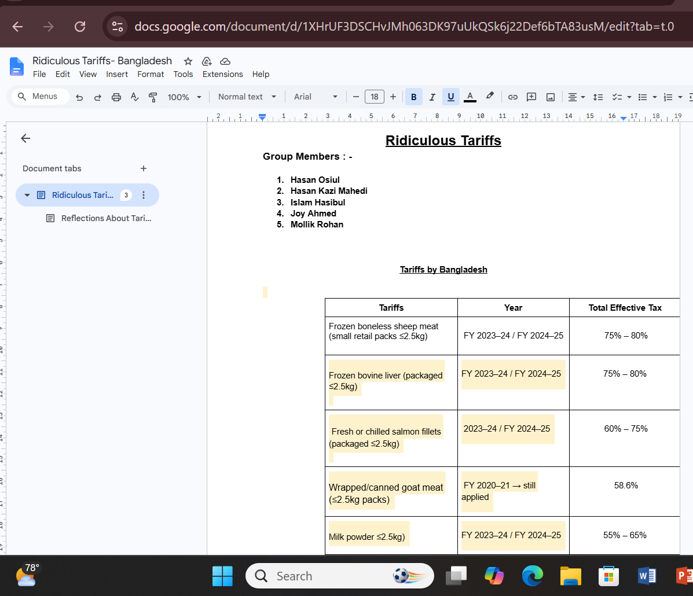

Project Overview
This activity explored how governments use tariffs to influence international trade. My group investigated several imported products and researched the tariff rates applied to them. We then analyzed whether these tariffs were effective or unnecessarily restrictive.
The goal was to understand how trade barriers affect consumers, producers, and market efficiency.
Evidence

.png)
.png)
The screenshots show the tariff research document and reflections completed during the activity.
Products Investigated
- Frozen Boneless Sheep Meat
- Frozen Bovine Liver
- Fresh or Chilled Salmon Fillets
- Prepared/Canned Goat Meat
- Milk Powder
Each product carried significant import tariffs that increased final consumer prices.
Key Findings
The activity revealed that tariffs can protect domestic industries, but they often increase prices for consumers. In some cases, tariff rules were highly specific, including packaging size and processing methods, which made the system appear unnecessarily complicated.
I learned that tariffs can create both benefits and costs depending on the objectives of policymakers.
What Did I Learn?
This project helped me understand that trade policy directly affects market outcomes. I learned how tariffs influence prices, consumer choices, imports, and domestic production. The activity also encouraged me to think critically about whether protectionist policies truly improve economic welfare or simply create inefficiencies.
Connection to International Trade
Tariffs remain one of the most important policy tools in international trade. Governments use tariffs to:
- Protect domestic industries
- Generate government revenue
- Reduce imports
- Influence trade balances
- Respond to international competition
Understanding tariffs is essential for analyzing global trade policy and economic development.